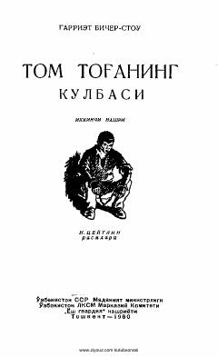

TTQullik tizimining shafqatsizligini fosh etuvchi mashhur klassik roman.
Ushbu asar XIX asr Amerika jamiyatidagi qullik tizimining shafqatsizligini va inson huquqlari uchun kurashni Tom tog'a ismli qulning fojiali taqdiri orqali yoritib beradi. Harriet Beecher Stowe quldorlikning axloqiy va ijtimoiy zararli tomonlarini o'zining ta'sirchan hikoyasi bilan butun dunyoga ko'rsatib bergan.